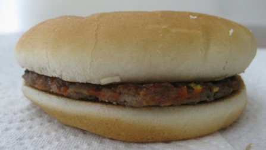

Classic Cheeseburger

Who doesn't love a cheeseburger?
This classic cheeseburger recipe that is loved by all has been inspired by McDonalds.
Ingredients
- The smallest beef patty you can find
- A single slice of Kraft American cheese
- A pair of hamburger buns
- Ketchup
- A singular slice of a dill pickle if you're feeling fancy
How to Prepare
- Preheat oven to 400 degrees
- Bake the small beef patty for 30 minutes
- Take the top half of the hamburger bun and place the piece of cheese on top
- Microwave the bun with cheese on it for 45 seconds
- Take the bottom half of the hamburger bun and place the beef patty on it
- Place the single slice of the pickle somewhere near the center of the patty, but not exactly in the center
- Squeeze an unholy amount of ketchup on top
- Place the cheese bun on top to complete the sandwich
- Serve to Gordon Ramsay
- Hide in a nuclear bunker
Return to Recipes